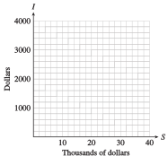

Investigation 1.1. Sales on Commission.
Delbert is offered a part-time job selling restaurant equipment. He will be paid $1000 per month plus a 6% commission on his sales. The sales manager tells Delbert he can expect to sell about $8000 worth of equipment per month. To help him decide whether to accept the job, Delbert does a few calculations.
- Based on the sales manager’s estimate, what monthly income can Delbert expect from this job? What annual salary would that provide?
-
What would Delbert’s monthly salary be if he sold only $5000 of equipment per month? What would his salary be if he sold $10,000 worth per month? Compute monthly incomes for each sales total shown in the table.
Sales Income 5000 8000 10,000 12,000 15,000 18,000 20,000 25,000 30,000 35,000  - Plot your data points on a graph, using sales, \(S\text{,}\) on the horizontal axis and income, \(I\text{,}\) on the vertical axis, as shown in the figure. Connect the data points to show Delbert’s monthly income for all possible monthly sales totals.
- Add two new data points to the table by reading values from your graph.
-
Write an algebraic expression for Delbert’s monthly income, \(I\text{,}\) in terms of his monthly sales, \(S\text{.}\) Use the description in the problem to help you:He will be paid: $1000 . . . plus a 6% commission on his sales.Income \(= \fillinmath{XXXXXXXXXXXXXXX}\)
- Test your formula from part (5) to see if it gives the same results as those you recorded in the table.
- Use your formula to find out what monthly sales total Delbert would need in order to have a monthly income of $2500.
- Each increase of $1000 in monthly sales increases Delbert’s monthly income by .
- Summarize the results of your work: In your own words, describe the relationship between Delbert’s monthly sales and his monthly income. Include in your discussion a description of your graph.